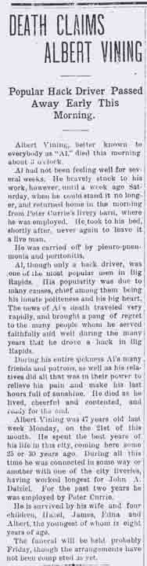
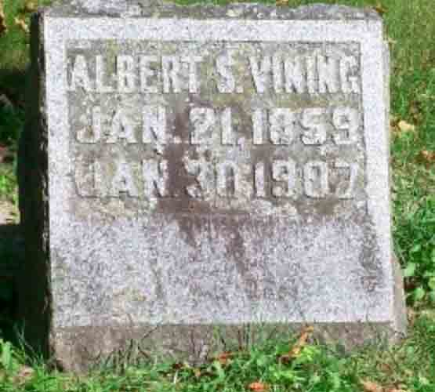
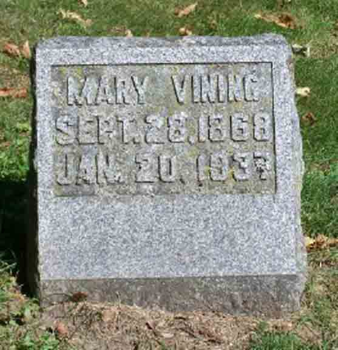
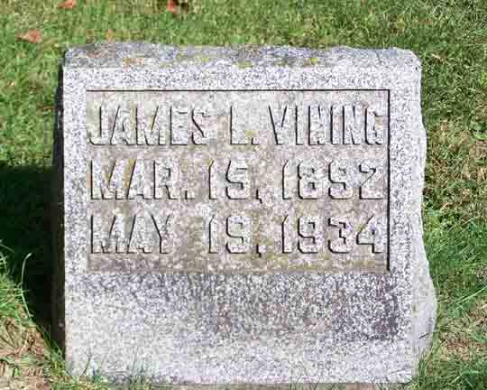
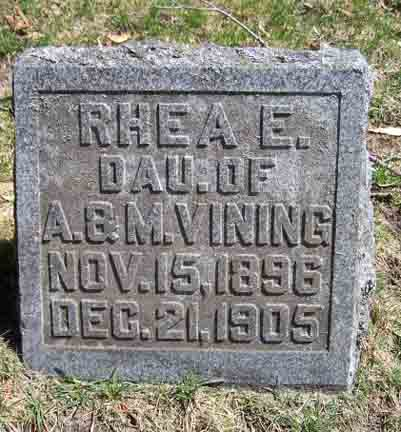

Census Data
| 1900 | 1910 | 1920 | 1930 | |
| Albert Scott Vining | 48 | dead | ||
| Mary (Haase) Vining | 33 | 43 | 53 | ? |
| Hazel Vining | 10 | 19 | not living in this household | |
| James L. Vining | 8 | single and living in separate household [see census record below] |
||
| Edna Vining | 5 | 15 | not living in this household | ? |
| Rhea A. Vining | 3 | dead | ||
| Albert Dewey Vining | 1 | 11 | single and living in separate household |


Death Data
Obituary for Albert Scott Vining:



